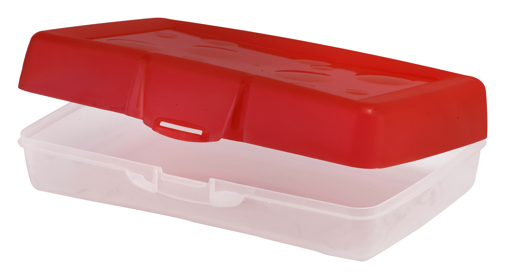

CASE STUDY

- Pencil Box 
-
Tab
-
Book
Output on Google Lens - PDifferent colored pencil boxes
Output on MobileNet Model - Popsicle and lollipop
Result -
Google Lens is more accurate.
Output on Google Lens - Mobile Phones and Tabs
Output on MobileNet Model - Cellphone and Mobile phone
Result -
Google Lens is more accurate.
Output on Google Lens - Book
Output on MobileNet Model - Wall clock
Result -
Google Lens is more accurate.
Google Lens was more accurate in all three cases. Therefore, I can conclude that Google Lens is much more accurate than MobileNet.